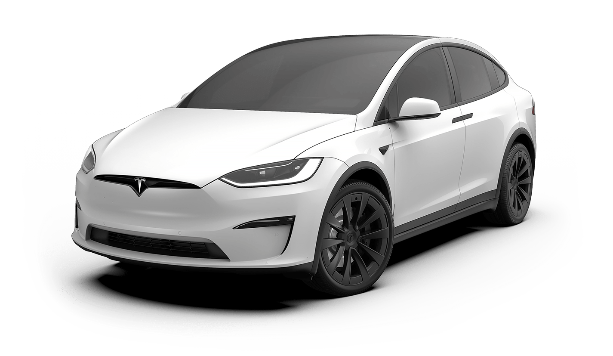
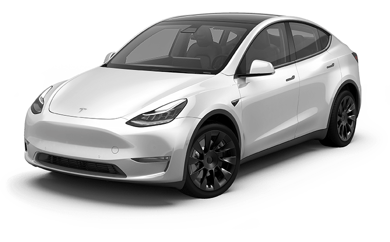
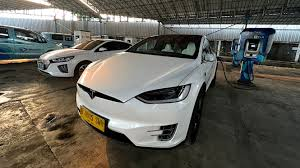

Tesla Taxis - Solusi Transportasi Masa Depan
Tesla Taxis adalah layanan taksi yang menggunakan kendaraan listrik Tesla. Selain ramah lingkungan, Tesla Taxis juga menawarkan pengalaman perjalanan yang mewah dan nyaman.
 Tesla Model S dikenal dengan performa tinggi dan teknologi canggih. Mobil ini dapat menempuh jarak jauh dengan satu kali pengisian daya, menjadikannya pilihan yang ideal untuk perjalanan jarak jauh di kota.
Tesla Model S dikenal dengan performa tinggi dan teknologi canggih. Mobil ini dapat menempuh jarak jauh dengan satu kali pengisian daya, menjadikannya pilihan yang ideal untuk perjalanan jarak jauh di kota.
- Jarak Tempuh: Hingga 370 mil per pengisian daya.
- Kecepatan Maksimum: 155 mph.
- Interior: Interior mewah dengan layar sentuh besar dan sistem suara premium.

Tesla Model X adalah SUV listrik dengan pintu sayap elang yang ikonik. Cocok untuk keluarga atau grup yang membutuhkan lebih banyak ruang, tanpa mengorbankan gaya atau kinerja.
- Jarak Tempuh: Hingga 340 mil per pengisian daya.
- Kecepatan Maksimum: 155 mph.
- Kapasitas: Dapat menampung hingga 7 penumpang.
 Tesla Model 3 adalah model Tesla yang paling terjangkau, namun tetap menawarkan kualitas dan teknologi tinggi. Ideal untuk perjalanan sehari-hari dengan efisiensi energi yang unggul.
Tesla Model 3 adalah model Tesla yang paling terjangkau, namun tetap menawarkan kualitas dan teknologi tinggi. Ideal untuk perjalanan sehari-hari dengan efisiensi energi yang unggul.
- Jarak Tempuh: Hingga 353 mil per pengisian daya.
- Kecepatan Maksimum: 140 mph.
- Harga Terjangkau: Model paling ekonomis di jajaran Tesla.

Tesla Model Y adalah crossover kompak yang menggabungkan efisiensi Model 3 dengan fleksibilitas ruang Model X. Cocok untuk mereka yang membutuhkan kendaraan serbaguna dengan gaya modern.
- Jarak Tempuh: Hingga 326 mil per pengisian daya.
- Kecepatan Maksimum: 135 mph.
- Kapasitas: Opsi untuk konfigurasi 5 atau 7 kursi.

Mengapa Memilih Tesla?
Tesla Taxis tidak hanya menawarkan kenyamanan, tetapi juga berkontribusi pada lingkungan dengan mengurangi emisi karbon. Pilih Tesla untuk perjalanan yang ramah lingkungan dan berteknologi tinggi.
Pelajari Lebih Lanjut